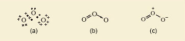
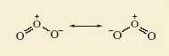
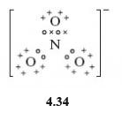
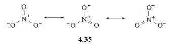

2 Resonance Structures
Gaseous oxygen occurs as O2 molecules. But ultraviolet light or an electric discharge converts some of the oxygen to ozone, this is a naturally occurring allotrope of oxygen with the molecular formula O3.
For ozone, a Lewis structure can be written which gives each atom a noble gas shell structure. This is shown in Figure 3 along with a corresponding structural formula.

Do the representations shown in Figure 3 suggest that the lengths of the two bonds in the ozone molecule should be equal or unequal?
Unequal; one is a double bond and the other a single dative bond. It would be expected this difference would impact on their lengths.
But experimental measurement shows that both bonds have the same length (127.8 pm).
To account for this, you need to realise that the structures shown in Figure 3 have counterparts in which the double and single bonds have simply been exchanged.
The real structure of the molecule with its equal bond lengths is a sort of average of the two. In situations like this, where a molecule is not adequately represented by a single Lewis structure and seems to be a composite of two or more, the competing structures are written down and linked by a double-headed arrow.
The two structures are called resonance structures, and the real structure of ozone is said to be a resonance hybrid of the two. This is shown in Figure 4.

The significance of the representations in Figure 4 is that in ozone, each bond is a mixture of one-half of a double bond and one-half of a single dative bond.
An analogy (which often crops up in chemistry textbooks) is with a mule- a hybrid of a horse and a donkey. Mules do not oscillate between a horse and a donkey. Likewise a resonance hybrid is a combination of a number of contributing resonance structures for a particular molecule. Figure 4 is not meant to imply that the molecule is constantly changing from one resonance structure to the other.
In the nitrate ion, NO3-, all three nitrogen-oxygen bonds are of equal length. Is this consistent with the Lewis representation of this molecule?
No, this contains one double bond and two single bonds (Structure 4.34). The atom of highest valency is nitrogen, so the single negative charge on the NO3− ion is assigned to nitrogen, giving it a full outer shell. All atoms gain the shell structure of neon if nitrogen forms one double bond and two single dative bonds to oxygen.

In the light of your answer to the previous question, account for the fact that in the nitrate ion, NO3-, all three nitrogen-oxygen bonds are actually of equal length.
The nitrate ion can be represented as a resonance hybrid (4.35)

To develop this discussion of resonance structures further, an example from the world or organic chemistry will be considered in the next section.
OpenLearn - Discovering chemistry
 Except for third party materials and otherwise, this content is made available under a Creative Commons Attribution-NonCommercial-ShareAlike 4.0 Licence, full copyright detail can be found in the acknowledgements section. Please see full copyright statement for details.
Except for third party materials and otherwise, this content is made available under a Creative Commons Attribution-NonCommercial-ShareAlike 4.0 Licence, full copyright detail can be found in the acknowledgements section. Please see full copyright statement for details.